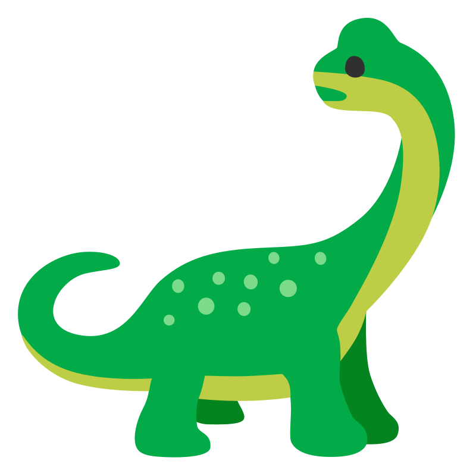

Diplodocus
Brukervennlige nettsider og digitale tjenester
Diplodocus er frilans konsulent Tommy Nordum. Han har mer enn 15 års
erfaring med å lage brukervennlige nettsider og digitale tjenester,
med ryddig kode og moderne webstandarder.
Han har gode kommunikasjonsevner, et godt øye for design og UX, samt
lang erfaring med å jobbe både som selvstendig utvikler og i
tverrfaglige team på større tekniske prosjekter.
Tommy har tidligere hatt roller som tech lead, teknisk prosjektleder,
mentor, samt fagansvarlig for teknologi i Netlife.
Utvalgte prosjekter
- Smittesporing og vaksinasjonsbooking for Remin.
- Nettsider, internverktøy og presentasjonsløsninger for Deichman.
- Pollenvarsel og API for Norges astma- og allergiforbund.
- Videreutviklet og modernisert Direktoratet for e-helse.
- Nettside og digital plattform for Whee!
- Nettside og poll for Oslo Urban Week.
- Nesten spisbare nettsider for Oslo Vegetarfestival.
- Sosial delingsplattform for Reddel.
Teknologi
React, Typescript, Next.js, Sanity, Vercel, GraphQL, Figma, Storybook, git, UU/WCAG og mye mer.
Tilgjengelighet
Diplodocus er alltid interessert i nye spennende prosjekter! Send en mail.